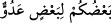

Müfessirlerin çoğu “ininiz” emrinde istihfâf (mânevî derecelerin düşmesi) olduğunu
söylemişlerse de yukarıdaki görüş en doğru olanıdır.
Kazâ ve Kader risâlesinde İbn Kemâl, şöyle demiştir: “Ben sizi bu ağaçtan
men’etmedim mi ve şeytan size apaçık bir düşmandır, demedim mi?” (el-A’râf,
7/22) âyetinde Âdem ve Havvâ’nın azarlanması onları taltîf içindir; yoksa onlara üzüntü
ve eziyet vermek için değildir. “İniniz” emriyle cennetten uzaklaştırılmaları, onların
kemâlini tamamlamak içindir. Nitekim şâir şöyle demiştir:
Bana daha yakın olmanız için
Evinizi uzak bir yere taşımanızı istiyorum .
( __WORD__ ) lâfzı hâl olmasına rağmen “vav”sız getirilmiştir. “Birbirlerinizi
doğru yoldan saptırmakla karşılıklı düşman olan kimseler olarak inin” demektir.
“Adüv” kelimesi hem tekil, hem çoğul için kullanılabilir. Bu yüzden âyette “a’dâ” diye
çoğul şekliyle getirilmemiştir.
Âyetteki düşmanlıktan kasıt; şeytan ve yılan ile Âdem ve Havvâ arasındaki
düşmanlıktır. Şeytan ve yılan Âdem’le Havvâ’ya, onlar da onlara düşmandır. Aynı
zamanda insanların düşmanlıkları dünyevî meselelerde birbirlerini çekememelerinden
ve dînî meselelerdeki ihtilâflarından kaynaklanır. Yılan insanları sokarak düşmanlık
yapar. İnsanlar da gördüğü yerde yılanın başını ezer. Şeytan insanlara vesvese verir,
insanlar da onu lâ’netler. Şeytan ile insan arasındaki düşmanlık dînî, yılanla olan ise
tabîî bir düşmanlıktır. Din ve tabîat bâkî oldukça, bu düşmanlık sona ermeyecektir.
Ancak zafer Allah’ın beraber olduğu zümrenindir. Allah Teâlâ: “Birbirinize düşman
olarak inin” buyurunca Âdem (a.s.) Allah’a şükretmiştir. Çünkü O, insana acımış “Ben
size düşman olduğum halde inin” diye buyurmamıştır. Düşman; hasmının kötülüğü için
elinden geleni yapandır. Eğer Allah Teâlâ insana düşman olsaydı hâlimiz nice olurdu.
“Müstakar” yerin üstü ve altı olabilir. “Müstakar” kelimesi Kur’ân’da üç mânâda
kullanılmıştır.
1- Ana rahmi. Rabbimiz şöyle buyuruyor: “O, sizi bir tek nefisten (Âdem’den)
yaratandır. (Sizin için) bir kalma yeri, bir de emânet olarak konulacağınız yer
vardır.” (el-En’âm, 6/98) Bu âyette kalma yerinden maksad, babaların sulbü veya
hayata elverişli olan yeryüzü; emânet olarak konulacak yerden maksad da ana rahmi
veya mezardır.
2- Dünyâ. “.... Yeryüzünde yerleşmek (müstakar) için” (el-Bakara, 36) âyeti buna
işâret etmektedir.
3- Âhıret. Burada da yerleşme iki yerde olmaktadır. Ya Cennette yerleşilir. Yüce
Allah şöyle buyuruyor: “O gün cennetliklerin alacağı yer çok huzurlu ve
dinlenecekleri yer pek güzeldir.” (el-Furkan, 25/24) Ya da cehennemde yerleşilir:
“Orası cidden ne kötü bir yerleşme ve ikamet yeridir!” (el-Furkan, 25/66) âyetlerinde
“cehennem” mânâsında kullanılmıştır.
Âyetteki, ölüm zamanı veya kıyâmetin kopma zamanı demektir. Allah Teâlâ bu